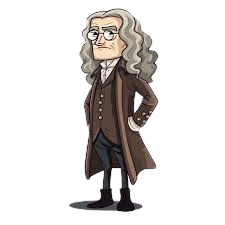
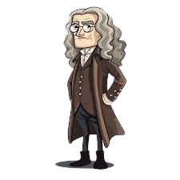

Isaac Newton criou o círculo cromático como parte de suas investigações sobre a natureza da luz e das cores, movido por seu interesse em entender como a luz branca se decomponha em diferentes cores. A criação do círculo foi consequência de suas experiências com prismas de vidro, por volta de 1666, quando ele tinha pouco mais de 20 anos.
Por que Newton escolheu saber sobre as cores?
Na época de Newton, acreditava-se que a luz branca era pura e que as cores surgiam por alterações feitas por objetos ou meios externos. Newton questionou essa ideia e decidiu investigar por si mesmo.
Ele conduziu uma experiência famosa:
- Fez um feixe de luz solar passar por um prisma.
- A luz se decompôs nas cores do arco-íris projetadas na parede: vermelho, laranja, amarelo, verde, azul, anil (índigo) e violeta.
- Ele concluiu que a luz branca é, na verdade, composta por um espectro de cores.
 
